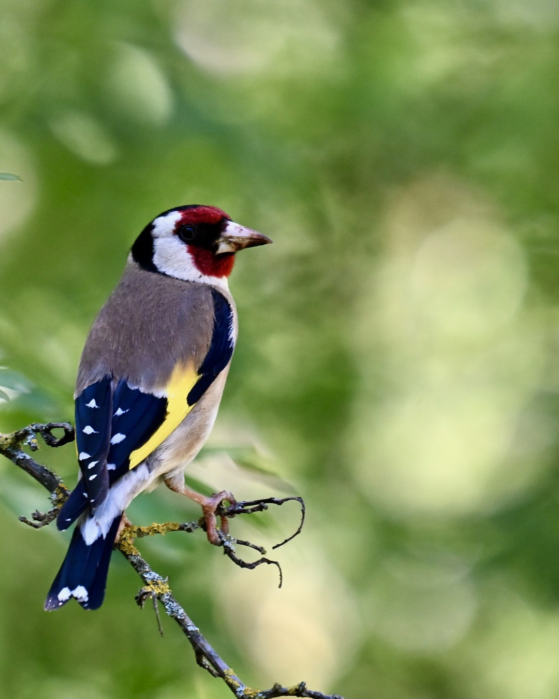
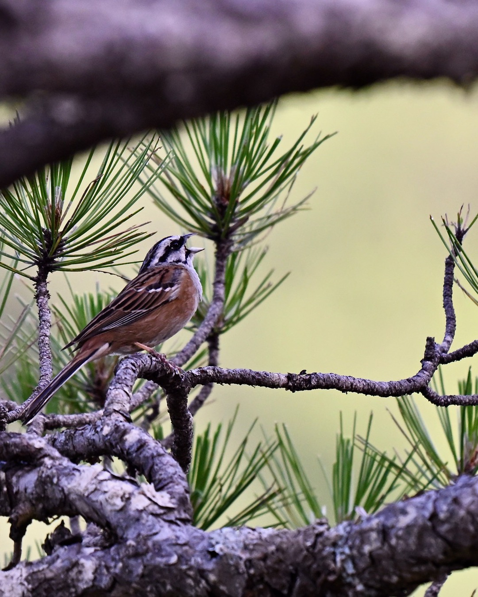
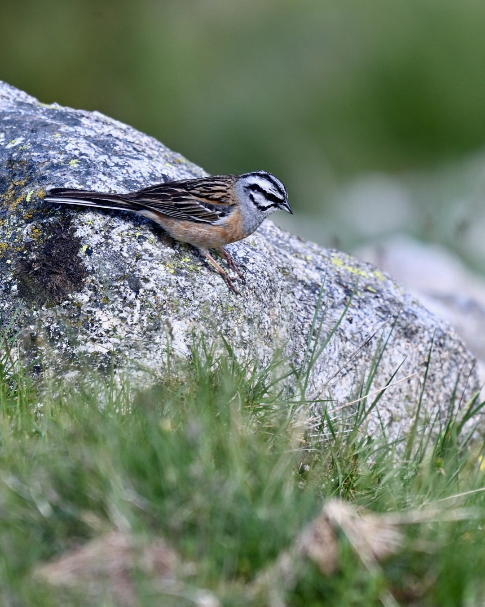

16 fotos en 14 posts · generado el 26 jul 2026 · datos leídos de fotos.json
WildLensProject
Casa de Campo

Vista previa · pendiente de publicar
ES
WildLensProject Llevaba un rato viendo a un jilguero ir y venir entre las ramas sin parar quieto, hasta que este se posó justo ahí, sobre el liquen, y aguantó lo suficiente para el retrato.
La máscara roja, el amarillo del ala, el pecho color canela — de cerca este pájaro parece pintado. La Casa de Campo en primavera tiene estas sorpresas de color entre tanto verde.
#birdphotography #europeangoldfinch #jilguero #carduelis #birdsofinstagram #aves #bokeh #telephoto #shallowdof #casadecampo #madrid #spain #españa #photography #photographer #fotografia #nikon #nikoncreators #birdsofmadrid #avesmadrid #madridbirds #spanishwildlife #wildlifeofinstagram
EN
I'd been watching a goldfinch hop from branch to branch without settling, and then it landed right there on the lichen and held still just long enough for this.
The red mask, the yellow wing flash, that cinnamon chest — up close this bird looks painted. Casa de Campo in spring keeps throwing these little bursts of color at you between all the green.
Preparada el 26 jul 2026
Alt text
Jilguero europeo posado de perfil sobre una rama cubierta de liquen, con la cabeza girada mostrando la máscara facial roja, la capucha blanca y negra, y el pico entreabierto. El pecho es marrón claro y el ala muestra una franja amarilla intensa junto a plumas negras con motas blancas. El fondo es un bokeh verde uniforme con puntos de luz difuminados, propio de vegetación primaveral fuera de foco.
4:5formato
1080 × 1350 pxdimensiones
El jilguero está en perfil mirando hacia la derecha con espacio de dirección; el retrato recorta el exceso de fondo vacío del lado derecho manteniendo aire suficiente delante del pico y toda la altura original del encuadre.
WildLensProject Lo escuché antes de verlo — ese canto tan característico entre los piornales de Gredos, subiendo y bajando de tono sin parar.
Tardé un rato en localizarlo, pero cuando lo hice tenía el pico abierto de par en par y el babero azul brillando al sol como si fuera de neón. Pocas aves cantan con tanta entrega.
#birdphotography #bluethroat #pechiazul #luscinia #birdsofinstagram #aves #bokeh #telephoto #birdsong #gredos #sierradegredos #avila #spain #photography #photographer #nikon #nikoncreators #natgeo #birdsofspain #spanishwildlife #wildlifeofinstagram #naturegram #birdwatchingspain #singingbirds
EN
I heard it before I saw it — that unmistakable song rising and falling somewhere in the gorse of Gredos.
Took me a while to spot him, but when I did, his beak was wide open and that blue bib was practically glowing in the sun. Not many birds sing with this much commitment.
Preparada el 26 jul 2026
Alt text
Pechiazul macho posado en la cima de un arbusto de sierra, con el pico completamente abierto en pleno canto. El babero de plumas azul intenso contrasta con el costado rojizo y el dorso pardo-grisáceo. Las patas oscuras se apoyan sobre tallos verdes de la vegetación serrana. El fondo es un bokeh uniforme en tonos verdes y ocres, propio de un día soleado en la sierra.
4:5formato
1080 × 1350 pxdimensiones
El original es cuadrado con el ave casi centrada y bastante bokeh vacío a los lados; el retrato 4:5 recorta solo el ancho sobrante, conservando toda la altura para el gesto del pico abierto hacia arriba en pleno canto.
WildLensProject Cada anillo de esos cuernos es un año de vida en la sierra — y este ejemplar tiene unos cuantos.
Lo encontré pastando tranquilo en un prado alto de Gredos, ajeno a la cámara, con esa cornamenta que casi le pesa más que la cabeza. Es de los machos más grandes que he visto por la zona.
#wildlife #wildlifephotography #fauna #ibex #cabramontesa #capraiberica #bokeh #telephoto #naturallight #gredos #sierradegredos #avila #spain #photography #photographer #nikon #nikoncreators #natgeo #wildlifeofinstagram #animalsofinstagram #naturegram #ibexofinstagram #gredoswildlife #spanishwildlife
EN
Each ring on those horns marks a year of mountain life — and this one's got plenty.
I found him grazing calmly in a high meadow in Gredos, completely ignoring the camera, horns looking almost heavier than his head. One of the biggest males I've come across up there.
Preparada el 26 jul 2026
Alt text
Macho adulto de cabra montesa con cuernos grandes y fuertemente anillados, pastando con la cabeza baja en un prado alpino cubierto de hierba verde y flores amarillas silvestres. El pelaje es pardo-grisáceo con la parte inferior de las patas más oscura. El fondo se difumina en un bokeh verde-amarillo uniforme, propio de un día soleado en alta montaña.
1:1formato
1080 × 1080 pxdimensiones
El animal está pastando con la cabeza baja y los cuernos extendidos en horizontal, ocupando más ancho que alto; un cuadrado ajustado recorta el prado vacío sobrante sin arriesgar cortar las puntas de los cuernos, como sí podría pasar con un recorte 4:5 más estrecho.
WildLensProject
Palancares · Laguna Grande de Gredos


1/2
Vista previa · carrusel de 2 fotos · pendiente de publicar
ES
WildLensProject El mismo escribano montesino, dos paisajes muy distintos.
En la Laguna Grande de Gredos lo encontré posado en una roca de granito cubierta de liquen, rodeado de flores de alta montaña — un centinela vigilando el prado.
En el pinar de Palancares, en Cuenca, apareció entre las ramas de un pino, con el pico entreabierto cantando, enmarcado de forma natural por las agujas verdes en primer plano.
Mismo dibujo de cabeza a rayas, mismo pecho canela, dos mundos completamente diferentes.
#birdphotography #rockbunting #escribanomontesino #emberizacia #birdsofinstagram #aves #bokeh #telephoto #naturalhabitat #gredos #cuenca #palancares #spain #españa #photography #photographer #foto #nikon #nikoncreators #birdsofspain #spanishwildlife #wildlifeofinstagram #naturegram #birdwatchingspain #mountainbirds
EN
Same rock bunting, two completely different landscapes.
At Laguna Grande in Gredos I found him perched on a lichen-covered granite boulder, surrounded by high-mountain wildflowers — a lookout over the meadow.
In the pine forest of Palancares, Cuenca, he showed up between pine branches, beak open mid-song, naturally framed by green needles in the foreground.
Same striped head pattern, same cinnamon chest, two entirely different worlds.
Preparada el 26 jul 2026
Foto 1 · El escribano del pinarDSC_5756.jpeg · Palancares
Alt text: Escribano montesino posado sobre una rama de pino, con el pico entreabierto en actitud de canto y la cabeza ligeramente alzada. El plumaje muestra el característico patrón de rayas blancas y negras en la cabeza y el pecho de tono canela. Ramas de pino desenfocadas en primer plano enmarcan la escena, con un fondo de bokeh amarillo-verde propio de un bosque de pinar.
4:5formato
1080 × 1350 pxdimensiones
El ave está enmarcada de forma natural por ramas de pino desenfocadas arriba y abajo en un encuadre horizontal; el retrato 4:5 recorta el ancho sobrante del fondo de bokeh amarillo-verde a la derecha sin afectar al marco de ramas ni al ave.
Foto 2 · Centinela de granitoDSC_4631.jpeg · Laguna Grande de Gredos
Alt text: Escribano montesino posado en el borde de una roca de granito cubierta de liquen amarillo y gris, en actitud alerta con la cabeza girada hacia la derecha. El plumaje muestra rayas blancas y negras en la cabeza y tonos canela en el pecho. El fondo es un prado verde desenfocado con pequeñas flores silvestres amarillas y azules.
4:5formato
1080 × 1350 pxdimensiones
El ave ocupa una fracción pequeña del encuadre horizontal original, posada en el extremo izquierdo de la roca; el retrato 4:5 recorta el prado vacío sobrante a la derecha y da más presencia al sujeto sin perder la roca de granito ni la capa de hierba en primer plano que dan contexto de hábitat.
WildLensProject Ese punto negro en el ala no es un adorno — es un ojo falso para despistar a los pájaros.
Encontré esta Erebia agarrada a una espiga silvestre en el Palancares, con las patas bien sujetas al viento que corría esa mañana. Un género de mariposa de montaña que casi nadie fotografía, más discreto que vistoso, pero con estos detalles que solo se ven de cerca.
#macrophotography #macro #butterfly #erebia #mariposa #lepidoptera #bokeh #telephoto #macrodetail #cuenca #palancares #spain #españa #photography #photographer #foto #nikon #nikoncreators #macroofinstagram #macrolove #butterfliesofinstagram #insectsofinstagram #naturephotography #spanishwildlife
EN
That black dot on the wing isn't decoration — it's a fake eye meant to confuse birds.
I found this Erebia gripping a wild flower spike in Palancares, holding on tight against the morning wind. A mountain butterfly genus almost nobody photographs, more understated than showy, but full of details you only notice up close.
Preparada el 26 jul 2026
Alt text
Mariposa del género Erebia posada sobre una espiga de flores blancas silvestres, con las alas cerradas mostrando un ocelo negro rodeado de naranja en el ala anterior. El cuerpo es oscuro y velludo, con las patas y antenas sujetas a la flor. Una brizna de hierba verde cruza el encuadre en diagonal por delante del insecto, sobre un fondo de bokeh verde uniforme.
4:5formato
1080 × 1350 pxdimensiones
La mariposa con las alas cerradas es más alta que ancha y está posada en la zona superior-derecha del encuadre horizontal original; el retrato 4:5 recorta centrado el bokeh vacío sobrante de la izquierda sin arriesgar cortar el insecto ni la flor.
WildLensProject Las lavandas de la Casa de Campo se llenan de podalirios en cuanto aprieta el calor.
Este llevaba un rato posado libando tranquilamente, con las alas medio abiertas dejando ver ese patrón a rayas que tienen. Tuve que tumbarme casi a ras de suelo para pillarlo con el fondo bien desenfocado.
¿Los habéis visto alguna vez de cerca? Son más grandes de lo que parece en foto.
#macrophotography #macro #butterfly #butterflies #mariposa #podalirio #bokeh #telephoto #depthoffield #casadecampo #madrid #spain #españa #photography #photographer #foto #nikon #nikoncreators #macroofinstagram #macrolove #macroworld #butterfliesofinstagram #insectsofinstagram #naturephotography
EN
Lavender season in Madrid means the swallowtails are back at Casa de Campo.
This one stayed put for a while feeding, wings half-open showing off that striped pattern. Had to get down almost to ground level to get the background this soft.
Ever seen one up close? They're bigger than they look in photos.
Preparada el 20 jul 2026
Alt text
Mariposa podalirio posada sobre una espiga de lavanda violeta, con las alas extendidas en diagonal mostrando su patrón rayado en blanco y negro y una mancha naranja y azul en el borde inferior. La probóscide se apoya sobre las flores mientras liba. El fondo, completamente desenfocado, muestra tonos verdes uniformes de vegetación estival.
4:5formato
1080 × 1350 pxdimensiones
El podalirio ocupa casi toda la altura del encuadre en diagonal, con la lavanda como base; el retrato aprovecha ese eje vertical y permite recortar el amplio espacio negativo verde de la izquierda sin perder ala ni flor.
Vista previa · carrusel de 2 fotos · pendiente de publicar
ES
WildLensProject De construir el hogar a alimentar la vida que crece en él.
En el Parque del Sureste, este pequeño agateador común recorre la corteza cubierta de líquenes dorados en busca de material para su nido, casi invisible entre la textura del tronco.
Semanas después, ya en El Pardo, vuelve a un escondite parecido con una larva en el pico: el trabajo de construir se ha convertido en el trabajo de alimentar.
¿Habías visto antes a esta especie tan pequeña y sigilosa?
#birdphotography #wildbirds #birdsofinstagram #aves #fotografiaaves #treecreeper #agateador #telephoto #bokeh #wildlifedetail #madrid #spain #españa #elpardo #photography #photographer #foto #nikon #nikoncreators #birdsofmadrid #avesmadrid #madridbirds #spanishwildlife #wildlifeofinstagram #naturegram #birdsofspain
EN
From building the home to feeding the life growing inside it.
In Parque del Sureste, this tiny common treecreeper works its way across lichen-covered bark searching for nesting material, almost invisible against the trunk's texture.
Weeks later, in El Pardo, it returns to a similar hideout with a larva in its beak: the work of building has become the work of feeding.
Had you ever spotted a bird this small and elusive before?
Preparada el 13 jul 2026
Foto 1 · El agateador entre líquenes doradosDSC_2177.jpeg · Parque del Sureste
Alt text: Agateador común posado verticalmente sobre un tronco cubierto de líquenes amarillos y dorados, con un filamento blanco en el pico usado como material para el nido. El ave, de plumaje moteado gris y blanco, ocupa el tercio inferior izquierdo del encuadre sobre un fondo verde grisáceo difuminado.
4:5formato
1080 × 1350 pxdimensiones
El ave ocupa el tercio inferior-izquierdo y el tronco liquenado domina el resto del encuadre vertical; el retrato 4:5 preserva esa dominancia textural sin perder al sujeto.
Alt text: Agateador común trepando por un tronco cubierto de líquenes junto a una zona con corteza desprendida, sosteniendo una larva blanca en el pico mientras mira hacia arriba en dirección a la entrada de su nido. El fondo es un bokeh verde uniforme propio de un bosque en primavera.
4:5formato
1080 × 1350 pxdimensiones
El agateador ocupa el tercio inferior con el tronco imponiéndose por encima; el retrato 4:5 refuerza el contraste de escala entre el ave diminuta y el árbol.
WildLensProject Desde su trono de granito, el rey de Gredos te mira a los ojos.
En la Sierra de Gredos, reptar entre bloques de granito me llevó hasta este macho de cabra montesa, tumbado como un monarca sobre su trono de piedra. El contrapicado invierte los papeles: aquí el pequeño soy yo. Sus cuernos anillados cuentan años de supervivencia en la alta montaña.
¿Qué animal salvaje te gustaría encontrar cara a cara?
#wildlife #wildlifephotography #fauna #ibex #cabramontesa #wildgoat #bokeh #naturallight #eyecontact #lowangleshot #gredos #sierradegredos #spain #españa #photography #photographer #fotografia #nikon #nikoncreators #natgeo #wildlifeofinstagram #animalsofinstagram #naturegram #ibexofinstagram #gredoswildlife #spanishwildlife
EN
From his granite throne, the king of Gredos looks you in the eye.
Deep in Spain's Sierra de Gredos, crawling between granite boulders led me to this Spanish ibex, resting like a monarch on his stone throne. The low angle flips the usual roles — here, I'm the small one. His ringed horns tell the story of years surviving high in the mountains.
Have you ever met a wild animal eye to eye like this?
Preparada el 13 jul 2026
Alt text
Macho adulto de cabra montesa (Capra pyrenaica) tumbado entre bloques de granito en la Sierra de Gredos, fotografiado desde un ángulo bajo. El animal mira directamente a la cámara, mostrando sus cuernos curvados y anillados. El fondo es un cielo azul despejado con nubes blancas dispersas, y las rocas de granito con manchas de liquen ocupan el primer plano.
1:1formato
1080 × 1080 pxdimensiones
El original ya es cuadrado (4029x4029) con el íbice centrado y la simetría de los cuernos como eje visual; el formato 1:1 conserva el encuadre completo sin sacrificar cielo ni rocas de primer plano.
WildLensProject En el instante exacto en que la vida depende de un milisegundo.
La Casa de Campo en invierno esconde una naturaleza que pocos ven. Esta gaviota juvenil desciende con las alas completamente abiertas, algo ya atrapado en el pico, ajena a todo lo que no sea su presa. El fondo de árboles desnudos se disuelve en un bokeh cremoso que aísla el instante de máxima tensión.
¿Alguna vez has visto una escena de caza así en pleno parque urbano?
#birdphotography #wildbirds #birdsofinstagram #aves #fotografiaaves #gull #bokeh #telephoto #actionphotography #freezeframe #madrid #casadecampo #spain #españa #photography #photographer #fotografia #nikon #nikoncreators #birdsofmadrid #avesmadrid #madridbirds #spanishwildlife #wildlifeofinstagram #naturegram
EN
The exact instant when life depends on a millisecond.
Winter in Madrid's Casa de Campo hides more wildlife drama than most people notice. This juvenile gull drops in with wings fully spread, something already caught in its beak, oblivious to everything but its prey. The bare winter trees dissolve into a creamy bokeh that isolates this moment of pure tension.
Have you ever witnessed a hunting scene like this in the middle of a city park?
Preparada el 10 jul 2026
Alt text
Gaviota juvenil en pleno vuelo, vista de perfil con las alas completamente extendidas hacia arriba y las patas colgando hacia abajo, sosteniendo un pequeño alimento en el pico. El plumaje muestra un patrón moteado marrón y blanco propio de un ejemplar joven. El fondo de árboles invernales desenfocados en tonos grises y marrones crea un bokeh uniforme que resalta al ave, iluminada por luz difusa de día nublado.
1:1formato
1080 × 1080 pxdimensiones
La foto ya es cuadrada de origen (2400x2400) y el ave llena el encuadre con las alas extendidas de lado a lado; el formato 1:1 preserva la composición completa sin sacrificar ninguna parte del ave ni del espacio negativo del bokeh.
WildLensProject En Madrid nieva en primavera — y no es nieve.
Esta lavandera blanca camina entre pelusas de chopo, un fenómeno efímero que solo dura unas semanas al año en la Casa de Campo. Un haz de luz lateral la recorta contra la sombra mientras lleva un pequeño insecto en el pico, alimento capturado en plena actividad primaveral.
¿Habías visto antes esta 'nevada' de primavera madrileña?
#birdphotography #wildbirds #birdsofinstagram #aves #whitewagtail #lavanderablanca #bokeh #telephoto #naturallight #highcontrast #casadecampo #madrid #spain #españa #photography #photographer #fotografia #nikon #nikoncreators #natgeo #birdsofmadrid #avesmadrid #madridbirds #spanishwildlife #birdsofspain #wildlifeofinstagram
EN
In Madrid it snows in spring — and it isn't snow.
This white wagtail walks among poplar fluff, a fleeting phenomenon that only lasts a few weeks each year in Casa de Campo. A shaft of side light carves her out of the shadow as she carries a tiny insect in her beak, food caught mid-spring hustle.
Have you ever seen Madrid's spring 'snow'?
Preparada el 6 jul 2026
Alt text
Lavandera blanca vista de perfil caminando sobre un suelo cubierto de pelusas de chopo blancas, con un pequeño insecto amarillo en el pico. Un haz de luz lateral ilumina el plumaje gris, blanco y negro del ave, recortándola contra un fondo en sombra profunda casi negro. La cola larga se extiende hacia la izquierda del encuadre mientras una pata queda levantada en pleno paso.
4:5formato
1080 × 1350 pxdimensiones
El ave queda centrada en el encuadre original (16:9), así que un recorte vertical centrado conserva cabeza, insecto en el pico y buena parte de la alfombra de pelusas, sacrificando la cola que se extiende hacia el borde izquierdo. Coincide con la variación 'más íntima' que la propia evaluación técnica sugería explorar.
WildLensProject El trabajo silencioso que sostiene toda una montaña floreciendo.
En los prados de la Sierra de Gredos, un abejorro se abre paso entre las flores de una boraginácea silvestre, cargando polen de espiga en espiga. Con el 180-600mm pude acercarme a su ritmo de trabajo sin interrumpirlo, dejando que el fondo verde se disolviera en un bokeh limpio.
Es una escena diminuta que se repite miles de veces cada primavera y que casi nunca nos detenemos a mirar.
¿Te habías fijado alguna vez en el trabajo de un polinizador de cerca?
#macrophotography #bumblebee #abejorro #insectphotography #wildlifephotography #polinizador #telephoto #bokeh #depthoffield #gredos #sierradegredos #avila #spain #photography #photographer #foto #nikon #nikoncreators #macroofinstagram #wildlifeofinstagram #insectsofinstagram #naturelovers #beesofinstagram #spanishwildlife
EN
The quiet work that keeps a whole mountain blooming.
In the meadows of Sierra de Gredos, a bumblebee works its way through the spikes of a wild borage flower, gathering pollen along the way. With a 180-600mm lens I could get close to its rhythm without disturbing it, letting the green background melt into a clean bokeh.
It's a tiny scene that repeats itself thousands of times every spring — one we rarely stop to notice.
Have you ever looked closely at a pollinator at work?
Preparada el 4 jul 2026
Alt text
Abejorro anaranjado y negro posado sobre una espiga floral rosa-blanca de una planta boraginácea, con las alas semiabiertas y las patas apoyadas en los pétalos mientras recolecta polen. El fondo es un bokeh verde uniforme y limpio propio de un teleobjetivo a máxima apertura. El insecto ocupa el tercio superior izquierdo de un encuadre vertical.
4:5formato
1080 × 1350 pxdimensiones
La composición vertical de la espiga floral con el abejorro en el tercio superior-izquierdo aprovecha bien el formato retrato, maximizando la presencia en el feed sin perder la estructura floral que da contexto a la escena.
WildLensProject Una mirada que calienta el invierno más frío.
Este petirrojo europeo apareció entre las ramas desnudas de El Pardo, posado contra un cielo gris-azulado de pleno invierno. Su pecho naranja parecía la única chispa de color en kilómetros de frío, y ese ojo brillante y curioso hizo que el resto del bosque desapareciera.
¿Hay algo más reconfortante que el rojo de un petirrojo en un día gris?
#birdphotography #wildbirds #birdsofinstagram #petirrojo #europeanrobin #aves #bokeh #telephoto #birdportrait #shallowdof #elpardo #madrid #spain #españa #photography #photographer #foto #nikon #nikoncreators #natgeo #birdsofmadrid #avesmadrid #spanishwildlife #birdsofspain #wildlifeofinstagram #naturegram
EN
A gaze warm enough to thaw the coldest February.
This European robin showed up among the bare branches of El Pardo, perched against a grey-blue winter sky. Its orange chest felt like the only spark of color for miles, and that bright, curious eye made the rest of the forest disappear.
Is there anything more comforting than a robin's red on a grey day?
Preparada el 1 jul 2026
Alt text
Petirrojo europeo posado en una rama desnuda, visto de frente con la cabeza ligeramente girada hacia la derecha. El pecho y la cara muestran un naranja intenso que contrasta con el dorso pardo-grisáceo y el vientre blanco. El ojo negro y brillante destaca con un punto de luz. El fondo es un azul-gris uniforme totalmente desenfocado, sin elementos distractores. La luz difusa ilumina el plumaje de forma homogénea.
4:5formato
1080 × 1350 pxdimensiones
El petirrojo mira hacia la derecha con un amplio espacio de fondo bokeh vacío; un recorte centrado a 4:5 conserva el ave, la rama principal y suficiente espacio de dirección, maximizando su presencia en el feed.
WildLensProject Una mirada que convierte a un ave común en un retrato con nombre propio.
En el Parque del Retiro, este macho de ánade real inclinó la cabeza hacia la cámara dejando ver todo el brillo iridiscente verde-azul de su plumaje. Es un ave que cruzamos cada día sin mirarla dos veces, aquí mirando de frente, casi posando.
¿Cuántas veces pasamos junto a un ánade sin mirarlo de verdad?
#birdphotography #wildbirds #ducksofinstagram #mallard #anadereal #aves #bokeh #birdportrait #closeupphotography #madrid #parquedelretiro #spain #españa #photography #photographer #fotografia #nikon #natgeo #birdsofmadrid #avesmadrid #madridwildlife #spanishwildlife #wildlifeofinstagram #naturegram
EN
A look that turns a common bird into a portrait with a name.
In Madrid's Retiro park, this male mallard tilted his head toward the camera, revealing the full iridescent green-blue shimmer of his plumage. A bird we walk past every day, here staring back as if posing for a portrait.
How often do we walk past a mallard without really looking?
Preparada el 1 jul 2026
Alt text
Macho de ánade real visto de frente y ligeramente ladeado, con la cabeza verde-azul iridiscente inclinada hacia la cámara, pico amarillo y patas anaranjadas apoyado sobre un borde de piedra junto al agua. El fondo desenfocado muestra tonos claros de piedra y agua verdosa. La luz difusa de un día nublado ilumina de forma uniforme el plumaje marrón y gris del cuerpo.
1:1formato
1080 × 1080 pxdimensiones
El ánade ya aparece centrado y de frente en un encuadre naturalmente cuadrado; el 1:1 conserva toda la composición sin recortar los laterales.
WildLensProject Entre el aire y el agua, un instante que no se repite.
Este ganso del Nilo completa su aterrizaje en el lago de la Casa de Campo, alas desplegadas en toda su envergadura y las patas rosadas rompiendo la superficie en un estallido de espuma. Reflejos, anticipación y una ráfaga a tiempo — así se captura un instante que dura menos de un parpadeo.
¿Cuántas veces has visto un aterrizaje así sin tener la cámara lista?
#birdphotography #wildbirds #birdsofinstagram #egyptiangoose #gansodelnilo #aveacuatica #actionphotography #freezeframe #telephoto #birdsinflight #casadecampo #madrid #spain #españa #photography #photographer #foto #nikon #nikoncreators #natgeo #birdsofmadrid #avesmadrid #spanishwildlife #wildlifeofinstagram #birdsofspain #naturegram
EN
Where the air meets the water, for just an instant.
This Egyptian goose completes its landing on the lake at Casa de Campo, wings fully spread and pink legs breaking the surface in a burst of spray. Reflexes, anticipation, and a well-timed burst — that's how you freeze a moment that lasts less than a blink.
How often have you caught a landing like this without your camera ready?
Preparada el 30 jun 2026
Alt text
Ganso del Nilo completando un aterrizaje sobre el agua, con las alas totalmente desplegadas mostrando el patrón blanco y negro del plumaje. La cabeza, de tono marrón claro con un parche oscuro alrededor del ojo, mira hacia la izquierda. Las patas de color rosa intenso tocan la superficie generando salpicaduras y espuma blanca. El fondo muestra agua en tonos verde-azulados con reflejos de luz diurna. El ave ocupa el centro del encuadre en un momento de acción congelada.
4:5formato
1080 × 1350 pxdimensiones
El ganso ocupa el centro del encuadre con las alas desplegadas verticalmente (una alzada, otra extendida); el formato retrato maximiza su presencia en el feed y aprovecha mejor la verticalidad del aleteo que el 1:1 o el paisaje.